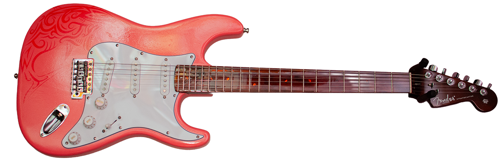

About Stonetone Guitars
Our CEO/Master Builder, Todd Stone, started playing guitars when he was 12, that's like 40+ years ago. He had a dream of being Eddie VanHalen....didn't we all? In 2025 he decided that he wanted a Fender Stratocaster, not just any Stratocaster, he wanted an American Player Series, but it wasn't in his budget, so he decided to build his own, and the **Tropiaster** was born.
Todd has built several custom guitars all with grit and soul. Inspired by Punk, Rock, Metal, Classic Rock and Blues, Stonetone Guitars brings vintage tones to the modern player—one hand-wired masterpiece at a time. **We specialize in custom electric guitar builds and professional luthier services right here in Conway, SC.**
Professional Guitar Luthier Services
- Custom Build Guitars —You tell us what you want, and we'll make it -- Click Here to get a Custom Quote
- Upgrades —Want to give your guitar a new sound with new pickups, or upgrade the electronics? We can get it done, including wiring mods and hardware swaps.
- Setup & Fret Work —Even the cheapest guitar can sound and play better with a good setup. We provide professional setups, fret leveling, and intonation adjustments.
- Total Overhaul — Looking to change the look and sound of your guitar? Talk to us. We can help you get the look and sound you're looking for without breaking the bank with a new guitar.
Custom Electric Guitar Builds
All our guitars get the best hardware and electronics, ensuring reliability and tone that lasts.
- Locking Tuners —The improved tuning stability provided by locking tuners keeps you playing longer, and string changes are a breeze.
- CTS Pots —Made in America and used by Fender & Gibson, need we say more 😊
- Oak-Grigsby & Switchcraft Switches and Jacks —Another one, made in America and used by Fender & Gibson 😊
- Tonerider Pickups —Made in the UK, these pick up are a real favorite of our. Lots of option of Single coil to Humbucker, to P90.
Stonetone Classic Stratocaster: Our first build, that started the whole thing was a classic Stratocaster in a Vintage Tahitian Coral paint job, with Fender Tex-Mex Pickups.

Tele Twang: After the succesful build of the Tripcaster, why not go with a Telecaster? What came next, but a beautiful black Telecaster, with a custom decal, and of course Fender Deluxe Pickup.

Blink 182 Strat: The Tom Delong inspired Strat has become a favorite of Todd. This is one hot Rocker, with a single ToneRide Rockstar humbucker, and a on/off switch...why? Why not? Who doesn't want to turn their guitar off!

Purple Punch: The Purple one, inspired by a can of purple paint. A glitter clear coat makes this one really sparkle. Loaded with Bootstrap ImpStout pickups, this one is ready to Rock! Bootstrap Pickups are hand made in Ohio, Todd's home state which he's proud to represent when he can, GO BUCKS!!

Lil'SG the Could:
This ¾ scale Epiphone SG was given a new life. Acquired on Facebook Marketplace, the kid guitar with a beat up finish, cheap electronics and hardware was stripped down, given a new OxBlood and Black dye job, all new electronics were installed, along with new locking tuning machines, and of course, a set of ToneRider Generator humbuckers. This Lil'SG is a real rocker for sure.

Contact Stonetone Guitars Luthier
Want a custom build? Questions about a project or need a quote for a setup? Reach out below:
📞 Call Us: 843-350-1943
📧 Email Us: info@stonetoneguitars.com
or Fill out the below form:
Follow us on Social Media

|

|